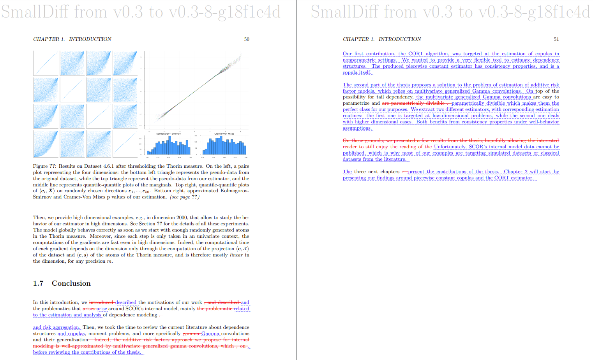

class: center, middle # Version control for academics #### *or* ### Git: from the kernel to reproducible research #### Oskar Laverny @ YRD Feb. 17, 2023 --- # Version Control ? <script> remark.macros.scale = function (percentage) { var url = this; return '<img src="' + url + '" style="width: ' + percentage + '" />'; }; </script> <style> .row { display: flex; } .column { flex: 50%; } </style> <div class="row"> <div class="column"> <img src="img/phdcomics.gif" alt="Piled Higher and Deeper by Jorge Cham. Source: www.phdcomics.com" style="width: 80%" /> </div> <div class="column"> "Primitive" version controls are manual (and thus error-prone), but quite common: <br /><br /> 1. When working on a project, you need some kind of history of what you did<br /><br /> 2. Being able to roll back and forth between versions is nice<br /><br /> 3. Collaboration is a mandatory feature<br /><br /> => You <em >need</em> some kind of version control system. <br /><br /><br /> </div> </div> ??? Teasing comic but true Manuel VCS problems : - difficult to find the change you want - difficult to understand what happened - collaboration is hard. Collaboration : future you. Raise hands if experience with git or other version controls systems ? --- # Why version control A Version Control System (VCS) is a system that **keeps track of changes made to a collection of files or folder**. Such systems usually facilitate collaborations. Data is tracked as a list of **snapshots**, which also contains **metadata**. Why is it usefull : - Permits collaborative development - Efficient for all projects sizes - Automatically answer hard questions : who, when, why ? bisection ? - **Allows you to revert any changes and go back to a previous state** - **Allows you to maintain several concurrent versions of the project** **Remark**: Mailing is a valid but very manual VCS. ??? Exemple of parallell developpement problem with mails : - fixing an error while someone else review your code - fix get lost - fix again. Printing + red pen + Scan is primitive collaboration. --- # Version control and reproducible research As academics, our work usually outputs a lot of plain text files: - Main content as .tex files (definitions, theorems, proofs, etc..) - References as .bib file - Data as .csv file or other format - Source code that analyze data and produces graphs and tables - Compilation pipeline as a <em>makefile</em> Academics usually value **reproducibility** of results. This requires that you provide others a way to... reproduce your results. <b>A good VCS facilitates reproducibility</b> as it allows you and others to understand how the current result was made, and therefore faciliate drastically the reproduction of your results. ??? Consider again future-you as someone else. A **yes** to one of these questions means you probably need VCS: - Did you ever struggle to reproduce results (including yours) ? - Do you usually hold several versions of the same work ? - Do you ever modify a copy to keep the orginal safe *just in case* ? - Did you ever deleted work and wish you had not ? --- # Classical motivations Good reasons to use version control: - **Transparency** of work done - **Better organization** of files and folder - **Easy to track change** - **Easy collaboration** (no need to mail things around). - **Ensure reproducibility** of your work by anyone else - **Huge potential for automation** *we will discuss that later* More precisely: - An academic project is **a set of changes made to a set of text files**. - This is very close to a software project - Tools from software engineers are applicable to academic work. **=> You should consider your work as a code base.** --- # Git: the defacto standard VCS. <div class="row"> <div class="column"> <img src="img/git.png" alt="XKCD Comic" style="width: 90%" /> </div> <div class="column"> 1. Git was created in 2005 by Linus Torvalds to manage the kernel's code.<br /><br /> 2. <a href=https://insights.stackoverflow.com/survey/2021#overview>SODS2021</a> : 94% of devs use git everyday. <br /><br /> 3. Github has <a href="https://webtribunal.net/blog/github-statistics/">over 200M repo from 73M users in 337 languages</a>, holding the humanity code legacy.<br /><br /><br /> <b>Today's program:</b> <br /><br /> I. Bottom-up introduction to Git<br /><br /> II. Examples of application to academic work<br /><br /> </div> </div> ??? Git interface = leaky abstraction, learning top-down is not very good. Avoid to follow the approach of the comic. Underlying design and ideas can be understood, instead of memorizing the interface. You'll understand what the commands do by understanding what they do to the data model. --- # Git's data model A git **repository** is a collection of files and folders in a directory, here called **(root)**. A sample directory might look like that: ``` (root) (tree) | |- analysis (tree) | | | | data.csv (blob) | | script.jl (blob) | |- bibliograpy.bib (blob) |- paper.tex (blob) |- makefile (blob) | ``` Folders are called **trees**, files are called **blobs**. The data structure is **recursive** : trees can contain other trees and blobs. Snapshots in git are called **commits**. They have metadata attached to them : - Author - Description - Date - etc... --- # Git's history model Git models history as a Directed acyclic graph (DAG). Each snapshot, encapsulating the whole set of files and folders, is timestamped and metadata are added. One metadata is the **parent** snapshot. Exemple of a linear history: ``` O <-- O <-- O ``` You can work on diferent things in paralel via branches: ``` O <-- O <-- O <-- O (you add a missing proof) ^ \ --- O <-- O (your coauthor fixes a notation) ``` Branches can then be merged: ``` O <-- O <-- O <-- O <---- O (both the proof and the notation fix are included) ^ / \ v --- O <-- O ``` ??? o are commits (snapshots), and arrows are parenting. Merge conflicts : - handled automatically - Tools to facilitate handling them otherwise. --- # Pseudo-implementation We can implement the git data model quite easily. A file is just of bunch of bytes : ```julia Blob = Vector{Byte} ``` A directory contains named files and directories ```julia Tree = Dict{String,Union{Tree,Blob}} ``` A commit has parents, metadata, and the top-level tree ```julia struct Commit parent::Vector{Commit} # might be empty author::String message::String snapshot::Tree end ``` This is a clean way to model history. --- # Objects and content-adressing An **object** is a blob, tree or commit. ```julia Object = Union{Blob,Tree,Commit} ``` Objects are **content-addressed**. What git maintains on disc is a store of objects with names : ```julia # The main git store: objects = Dict{String, Object}() # we initialize it empty. ``` where the keys are the sha1-hashes of the objects: ```julia function store!(objects,o) id = sha1(o) objects[id] = o end function load(objects,id) return objects[id] end ``` ??? Rq : hash functon turn a big piece of data into a small string. They give you a way to name a thing deterministically on the content of the thing. Rq : git implementation is mostly C, and some bash and perl scripts. Blobs, trees and commits are unified: they are all objects. Looks like commits contains a lot of other comits, but everything is referenced by id (pointers) for efficiency: each object is stored on its own and refereces the others by their sha1-hash. --- ## e156393cef8b62f30d58ca0eb37bf7a75221471e A **Sha1 hash** is a hexadecimal string of 40 characters, such as `e156393...71e`. - Sha1 is a **cryptographic hash function**: it is deterministic but chaotic - Gives a "unique" identifier to a commit, which is in "bijection" with its content. Sha1 names are really inconvenient. Thus git maintains a set of references: ```julia references = Dict{String,String}() # maps readable human names to sha1 hashes. ``` Ex: `fix_bug_in_proof`, `master`, `HEAD`, `v0.1`, `sudmitted_version` ... We can now **refer to things by name** in the commit graph. **Remark**: The actual commit graph is immutable, but references are mutable. You can move the `fix_bug_in_proof` reference (while you cannot change hashes of already-done commits). --- # Example 1 All git commands make additions to the DAG and/or modifications to the references: ```terminal git commit git checkout git branch git merge ``` ``` --------------------------------------------------- O <-- O <-- O (HEAD -> master) --------------------------------------------------- git commit O <-- O <-- O <-- O (HEAD -> master) --------------------------------------------------- git branch; git checkout; git commit x2 O <-- O <-- O <-- O (master) ^ \ --- O <-- O (HEAD -> bugfix) --------------------------------------------------- git checkout; git merge O <-- O <-- O <-- O <---- O (HEAD -> master) ^ / \ v --- O <-- O (bugfix) --------------------------------------------------- ``` ??? Draw a graph on the board: few commits and few references. --- # Ex. 2: The templating problem (1/3) Say we finished working on a paper. ```terminal lrnv@laptop paper $ git lg * <span style="color:yellow;">b9f1617</span><span style="color:yellow;"> (</span><span style="font-weight:bold;color:aqua;">HEAD -> </span><span style="font-weight:bold;color:lime;">master</span><span style="color:yellow;">, </span><span style="font-weight:bold;color:yellow;">tag: v1.0</span><span style="color:yellow;">)</span> Fix a typo <span style="font-weight:bold;color:#3333FF;">Oskar Laverny </span><span style="color:lime;">3 minutes ago (2023-01-12)</span> * <span style="color:yellow;">3cb7e6c</span> Add proof of main Thm <span style="font-weight:bold;color:#3333FF;">Oskar Laverny </span><span style="color:lime;">4 minutes ago (2023-01-12)</span> * <span style="color:yellow;">88d916e</span> Add definition of XX <span style="font-weight:bold;color:#3333FF;">Oskar Laverny </span><span style="color:lime;">4 minutes ago (2023-01-12)</span> * <span style="color:yellow;">147a080</span> First commit <span style="font-weight:bold;color:#3333FF;">Oskar Laverny </span><span style="color:lime;">5 minutes ago (2023-01-12)</span> ``` The current verison, tagged `v1.0`, will be the version we push to `arXiv` and send to review. But the paper requires that we send a version to review with specific notations, templating, etc... **Use a branch:** ```terminal lrnv@laptop paper $ git checkout -b templating Switched to a new branch 'templating' ``` Now do stuff in that branch to comply with the requirements of the journal, and comit them. --- # Ex. 2: The templating problem (2/3) ```terminal lrnv@laptop paper $ git lg * <span style="color:yellow;">d380354</span><span style="color:yellow;"> (</span><span style="font-weight:bold;color:aqua;">HEAD -> </span><span style="font-weight:bold;color:lime;">templating</span><span style="color:yellow;">)</span> Comply with journal's XX template <span style="font-weight:bold;color:#3333FF;">Oskar Laverny </span><span style="color:lime;">18 seconds ago (2023-01-12)</span> * <span style="color:yellow;">b9f1617</span><span style="color:yellow;"> (</span><span style="font-weight:bold;color:yellow;">tag: v1.0</span><span style="color:yellow;">, </span><span style="font-weight:bold;color:lime;">master</span><span style="color:yellow;">)</span> Fix a typo <span style="font-weight:bold;color:#3333FF;">Oskar Laverny </span><span style="color:lime;">8 minutes ago (2023-01-12)</span> * <span style="color:yellow;">3cb7e6c</span> Add proof of main Thm <span style="font-weight:bold;color:#3333FF;">Oskar Laverny </span><span style="color:lime;">8 minutes ago (2023-01-12)</span> * <span style="color:yellow;">88d916e</span> Add definition of XX <span style="font-weight:bold;color:#3333FF;">Oskar Laverny </span><span style="color:lime;">9 minutes ago (2023-01-12)</span> * <span style="color:yellow;">147a080</span> First commit <span style="font-weight:bold;color:#3333FF;">Oskar Laverny </span><span style="color:lime;">10 minutes ago (2023-01-12)</span> ``` Now we send the version from the `templating` branch to the journal. While they revise is, we find some error in the paper. We need to fix the mistake in all the versions, right ? ```terminal * <span style="color:yellow;">fde936d</span><span style="color:yellow;"> (</span><span style="font-weight:bold;color:aqua;">HEAD -> </span><span style="font-weight:bold;color:lime;">master</span><span style="color:yellow;">)</span> Fix error about XXX <span style="font-weight:bold;color:#3333FF;">Oskar Laverny </span><span style="color:lime;">23 seconds ago (2023-01-12)</span> <span style="color:red;">|</span> * <span style="color:yellow;">d380354</span><span style="color:yellow;"> (</span><span style="font-weight:bold;color:lime;">templating</span><span style="color:yellow;">)</span> Comply with journal's XX template <span style="font-weight:bold;color:#3333FF;">Oskar Laverny </span><span style="color:lime;">4 minutes ago (2023-01-12)</span> <span style="color:red;">|</span><span style="color:red;">/</span> * <span style="color:yellow;">b9f1617</span><span style="color:yellow;"> (</span><span style="font-weight:bold;color:yellow;">tag: v1.0</span><span style="color:yellow;">)</span> Fix a typo <span style="font-weight:bold;color:#3333FF;">Oskar Laverny </span><span style="color:lime;">11 minutes ago (2023-01-12)</span> * <span style="color:yellow;">3cb7e6c</span> Add proof of main Thm <span style="font-weight:bold;color:#3333FF;">Oskar Laverny </span><span style="color:lime;">12 minutes ago (2023-01-12)</span> * <span style="color:yellow;">88d916e</span> Add definition of XX <span style="font-weight:bold;color:#3333FF;">Oskar Laverny </span><span style="color:lime;">12 minutes ago (2023-01-12)</span> * <span style="color:yellow;">147a080</span> First commit <span style="font-weight:bold;color:#3333FF;">Oskar Laverny </span><span style="color:lime;">13 minutes ago (2023-01-12)</span> ``` --- # Ex. 2: The templating problem (3/3) ```terminal lrnv@laptop paper $ git checkout templating Switched to branch 'templating' lrnv@laptop paper $ git rebase master Successfully rebased and updated refs/heads/templating. lrnv@laptop paper $ git lg * <span style="color:yellow;">b9faeb0</span><span style="color:yellow;"> (</span><span style="font-weight:bold;color:aqua;">HEAD -> </span><span style="font-weight:bold;color:lime;">templating</span><span style="color:yellow;">)</span> Comply with journal's XX template <span style="font-weight:bold;color:#3333FF;">Oskar Laverny </span><span style="color:lime;">22 seconds ago (2023-01-12)</span> * <span style="color:yellow;">fde936d</span><span style="color:yellow;"> (</span><span style="font-weight:bold;color:lime;">master</span><span style="color:yellow;">)</span> Fix error about XXX <span style="font-weight:bold;color:#3333FF;">Oskar Laverny </span><span style="color:lime;">4 minutes ago (2023-01-12)</span> * <span style="color:yellow;">b9f1617</span><span style="color:yellow;"> (</span><span style="font-weight:bold;color:yellow;">tag: v1.0</span><span style="color:yellow;">)</span> Fix a typo <span style="font-weight:bold;color:#3333FF;">Oskar Laverny </span><span style="color:lime;">15 minutes ago (2023-01-12)</span> * <span style="color:yellow;">3cb7e6c</span> Add proof of main Thm <span style="font-weight:bold;color:#3333FF;">Oskar Laverny </span><span style="color:lime;">15 minutes ago (2023-01-12)</span> * <span style="color:yellow;">88d916e</span> Add definition of XX <span style="font-weight:bold;color:#3333FF;">Oskar Laverny </span><span style="color:lime;">16 minutes ago (2023-01-12)</span> * <span style="color:yellow;">147a080</span> First commit <span style="font-weight:bold;color:#3333FF;">Oskar Laverny </span><span style="color:lime;">17 minutes ago (2023-01-12)</span> ``` Now both versions contain the error fix. You can of course do the same thing with more versions... **Remaind that** references are mutable, but objects are not. Remark that the templating commit has a different hash ! --- # Ex. 3: Github Actions <a href="https://github.com/features/actions">Github Actions</a> are a great way to automatize some repetitive tasks around the publication of a paper: - Run the analysis and re-render the paper at each commit. - Provide a fixed URL for the output to distribute it. - Automatic testing and continuous integation of software. - Automatically compile stuff for you and your collaborators, or even reviewers. - Ensures constant reproducibility of your results through continuous integration If you end up doing something repetitively, then probably you should automatize it: - Less risk of error - No more forgetting a step (e.g. forgetting to update a graph !) --- # Ex. 3.1: `git-latexdiff` magic The <a href="https://gitlab.com/git-latexdiff/git-latexdiff">git-latexdiff</a> tool allows to compile a diffed version of the latex document. It can be done online directly at each commit to track changes on the go:  --- # Ex. 4: Using issues to discuss and collaborate. If more than one author is involved, then a Github repository on which everyone writes modifications is usually a good thing. Github repo comes with a discussion area: - Issues can be used to **discuss potential modifications** together. They can be linked in commit messages for clearer retrospective and history. - Pull request to **validate together changes before merging them**. - **Written and asynchronous discussion** is a powerful way to collaborate. **Known example** : <a href="https://github.com/HoTT/book">Textbook on informal homotopy type theory</a>; 600pages book written in 6 months by more than 20 people, an exemple of *efficient collaboration*. See Andrej Bauer's <a href="https://math.andrej.com/2013/06/20/the-hott-book/">blog post</a>. More than 1000 issues and pull requests. ??? Asynchronous written collaboration is a lot better than oral meetings: - everyone can see what happened, and can re-read why. - nothing gets lots in your memory. --- ## Ex. 5: Github Pages Your project and/or your personal website and/or projects websites can be hosted and compiled directly from source, online, and served as website. <a href="https://pages.github.com/">Github Pages</a> allows you to pulish staticely generated websites such as blogs, documentations, applications of your packages, etc. A great way to communiate results that do not fit into the pdf standard. ## Ex. 6: JOSS <a href="https://joss.theoj.org/">JOSS</a> is a journal that **review and publishes code**, entirely based on GitHub. If you consider your code as part of your research outputs, then a JOSS review process is a great way to have this code reviewed by peers, publicly challenged, corrected... and published. A JOSS publication has a formal DOI attached to it, and can then be cited. --- ## Ex. 7: Automatic releases Github has the capacity to automatically produce and serve outputs on each modification to a repository. I use it to build my resume: - Add a ref in `papers.bib` or `confs.bib` or another one, comit & push. - Wait a little for it to compile `cv.pdf` and output at the fixed URL. **The link to output is fixed** so that the person cliking on it will always get the last verison. ## Ex. 8: Cost-free experimentation **Branching out** is a neat way of experimenting, e.g. a large refactoring of notations, without loosing what you already have. **No risk of loosing your work => Costless inovation.** *Branches are like soap: you should use them*. --- # Doggy-bag The key messages today are : - **You probably already use some kind of version control**. - **Learning an efficient VCS such as git is probably worth your time**. - **Asynchronous written collaboration** is a very powerful collaboration scheme for writing software, but also for research ! ### Thanks ! Theses slides are at https://lrnv.github.io/yrd2023/. Few more ressources: - [Missing Semester](https://www.youtube.com/@MissingSemester) *huge source for this talk* - [Git in simple words](https://xosh.org/explain-git-in-simple-words/) *very nice to read* - [Pro git book](https://git-scm.com/book/fr/v2) *the best reference about git.* - [Rcubed](https://r-cubed-v2.rostools.org/version-control.html) *a book with a nice chapter about verison control* - Blog posts about academic uses of git: [here](https://judgelord.github.io/PS811/3-git.html#1), [here](https://klb2.gitlab.io/latex/git/2020/11/19/latex-git.html) [](https://dev.to/azure/collaborate-on-research-papers-with-github-76e), [there](https://hackmd.io/@vivek-blog/github_article https://blogs.lse.ac.uk/impactofsocialsciences/2013/06/04/github-for-academics/) and [there](https://www.youtube.com/watch?v=6OkOmPqumWo) [](https://rvprasad.medium.com/a-git-workflow-for-writing-papers-in-latex-4cfb31be4b06) - [The HOTT book](https://math.andrej.com/2013/06/20/the-hott-book/) *a collaborative research story*